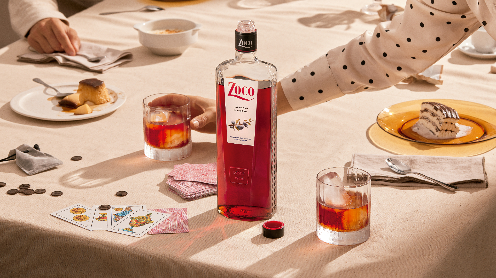
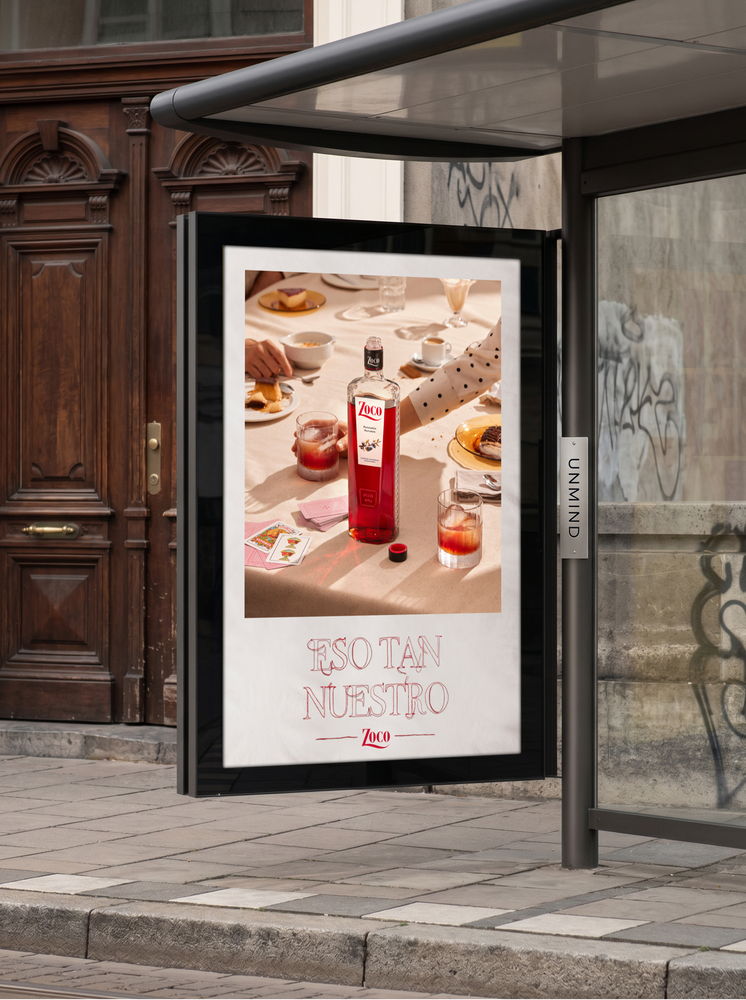
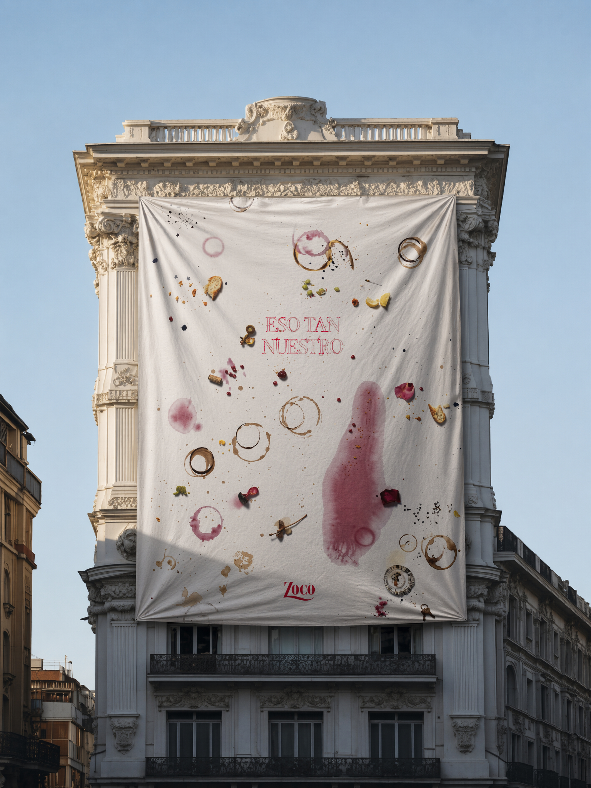
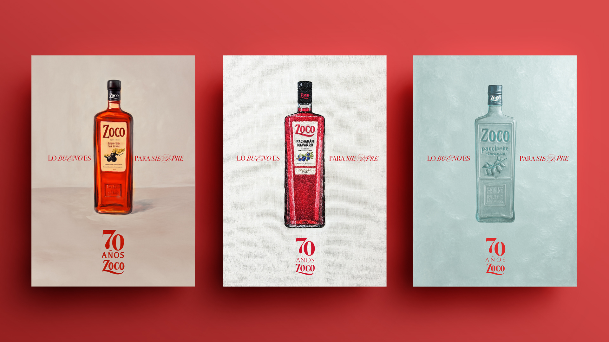
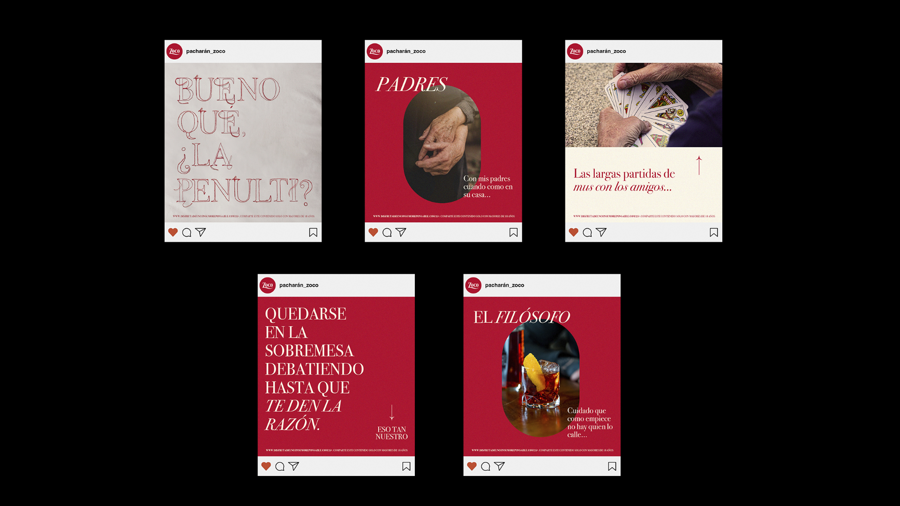

The challenge was to reposition Pacharán Zoco, a drink deeply rooted in Spanish culture and traditionally associated with after-dinner drinks, but with a somewhat old-fashioned perception, and make it relevant to a younger generation. But what if, instead of hiding its past, we turned it into its greatest strength? In recent years, many young artists and creators have been bringing elements of their cultural heritage back into the spotlight and reinterpreting them through a contemporary lens. That's exactly what we did with Zoco: we went back to its roots and put them front and center.
Its Navarrese origins, its traditional character, its way of doing things. Everything that could once have felt "old" became what made us unique.
Eso tan nuestro.
El reto era reposicionar Pacharán Zoco, una bebida muy ligada a la sobremesa española y con una percepción algo envejecida, para conectar con una generación más joven. Pero, ¿y si en lugar de esconder su pasado, lo convertíamos en su mayor fortaleza? En los últimos años, muchos artistas y creadores jóvenes están recuperando elementos de nuestra cultura y reinterpretándolos desde una mirada contemporánea. Con Zoco hicimos exactamente eso: volver a sus raíces para ponerlas en el centro.
Su origen navarro, su carácter tradicional, su forma de hacer las cosas. Todo aquello que durante años podía parecer "viejo" se convirtió en aquello que nos hacía únicos.
Esto tan nuestro.




